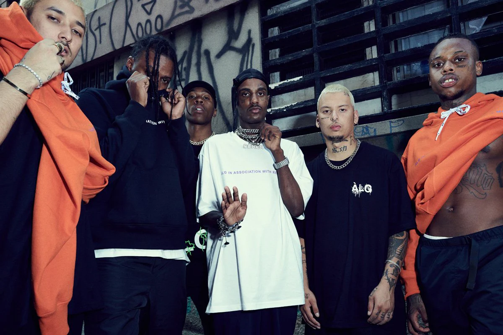

Trap Brasileiro: A Emergência de um Gênero Musical Contemporâneo
Nos últimos anos, um gênero musical tem ganhado destaque e conquistado o público jovem no Brasil: o trap. Originário dos Estados Unidos, o trap se mescla com elementos da cultura brasileira, resultando em uma vertente única e autêntica conhecida como "trap brasileiro". Neste artigo, vamos explorar a ascensão desse gênero musical, suas características distintivas e seu impacto na cena musical brasileira.
Origens e Influências:
O trap brasileiro nasceu da fusão entre o trap norte-americano e as sonoridades e ritmos brasileiros, como o funk carioca, o rap nacional e até mesmo o pagode. Essa mistura proporcionou um estilo musical diversificado, enraizado na cultura urbana e nos desafios sociais enfrentados pela juventude brasileira. Artistas como Gucci Mane, Travis Scott e Future influenciaram o trap brasileiro, ao lado de nomes nacionais como Emicida e Racionais MC's.
Principais Artistas do Trap Brasileiro:
O trap brasileiro viu surgir uma nova geração de artistas talentosos que conquistaram um espaço significativo na indústria musical. Nomes como:
Dfideliz: Conhecido por hits como "Dorflex" e "Doidera", Sidoka: Destaque com músicas como "De Nárnia" e "Tudo Ok",
Recayd Mob: Grupo formado por Jé Santiago, Derek, Dfideliz, MC Igu e outros, conhecido por faixas como "Plaqtudum" e "Rimar Com Mel",
Menestrel: Artista carioca que vem se destacando com canções como "Tapeia" e "Favela Love",
Dfideliz: Jovem MC paulista que se tornou conhecido com "Só Depende de Você" e "Como Nos Velhos Tempos".
Impacto Social e Cultural:
O trap brasileiro transcendeu os limites da música e se tornou um fenômeno cultural. Além de refletir as realidades da vida nas periferias brasileiras, o gênero também tem sido uma plataforma para artistas expressarem sua identidade e experiências pessoais. O trap brasileiro abriu espaço para discussões sobre questões sociais relevantes, como racismo, violência policial e desigualdade de gênero, contribuindo para a conscientização e mobilização da juventude.